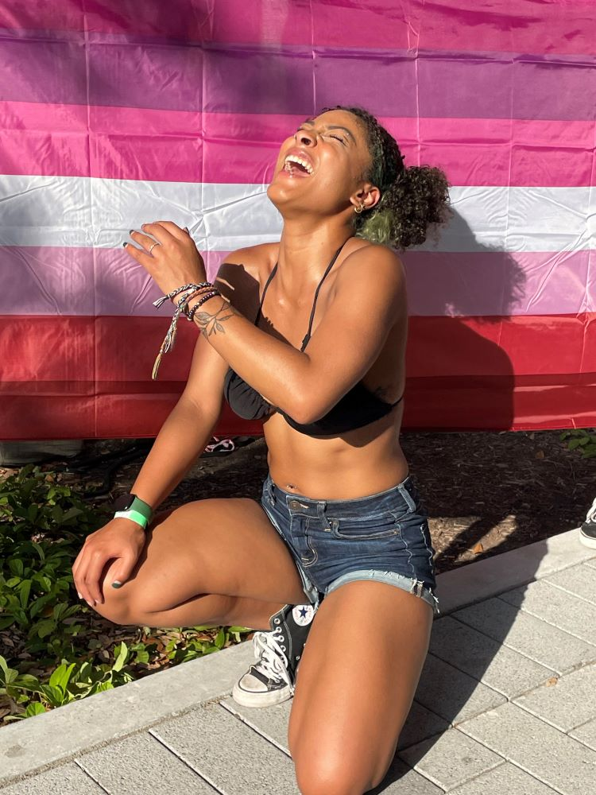
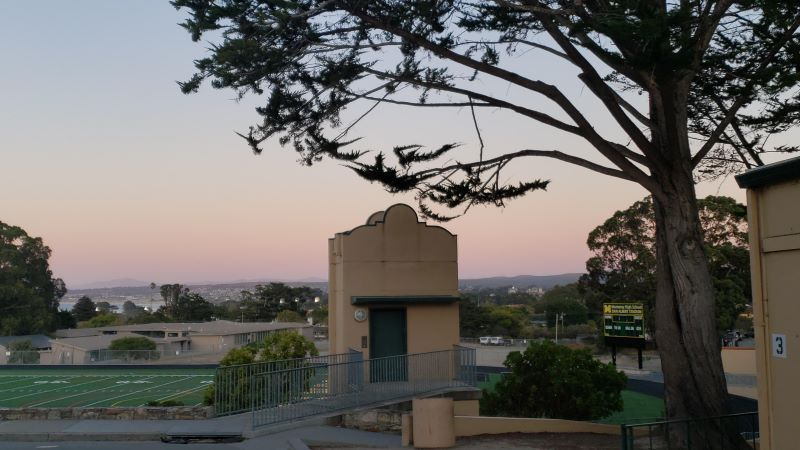

This will be almost like a speed run of who I am as a person. I feel like there are a lot of factors that make a person who they are. Literally, so many different factors make a person. You could probably raise two children the exact same way, separate from each other and they would still be different people—even personalities.
This is a picture of me going to pride for the first time in the summer of 2022 in Houston texas.
I feel like it's a little weird trying to describe your own personality. So first things first I'm gay. A lesbian technically. I know a lot of people hate when people make it their whole world, almost like everything has to be about being gay. It's not like that for me but it is a part of what makes me... me.
When people first meet me they assume that I'm really mean/rude. In reality, I actually have a big heart, and I care so much for the people that I hold close in my life.
Im a vibe kind of person and consider myself to be spiritual. I'm also very open-minded for the most part. I don't like to judge people, the only time it might feel like that is because I have a pretty weird sense of humor. This kind of goes back to the being gay thing. I never want to judge people because I know what it feels like to be judged.
Some of my hobbies are art. ever since I was little I used to make drawings, though they were horrible. I was getting really good at it the more and more that I got older. Also as I got older I got into more things art related. An example is digital art, I don't do it that much anymore, but I hope to start again soon. I consider video games an art especially because there are so many pretty games out there. Or a video game could be a core part of your childhood memories.

Another one of my hobbies is taking pictures of things that I find beautiful. It could almost be of anything. There are times in your life when you just find something so beautiful, that you want to take a picture of it. Just so you could always look back at it. That's how I feel about it. I love to take pictures of my surrounding. Things people take for granted and miss the beauty in. like the rain.
I also just love to spend quality time with the people in my life. The ones I hold close to me in my life are so important. Especially my girlfriend.
I also love music. It's almost like the thing that keeps me breathing. Music helped me get through alot of things. It also stimulates my mind, I have ADHD so sometimes it's the only thing that helps me focus. Or when i need to drown out all the noise around me when it gets too much.
Here is my spotify with some of my music.
I feel like this could be a complicated question, I like to say I'm from two places, or that I grew up in two different places. They work in unison. In my personaly opninion.
Originally I was born in San Antonio. My dad joined the military when I was young so we got to move around a lot. It wasn't the usual moving around though at least until recently. We moved from San Antonio Texas to Monterey California. We spent a little bit of time in California and moved to Killeen Texas. Then we moved back to Monterey and right back to Killeen. This was all through the years of me being 4-19. It was super odd because you usually don't go back to the same place let alone back to back.
It was always so weird because when I was in Califonia I always got told that I had an accent which I don't. They just thought it was because I said the word "yall". But then when I would come to Texas everyone was saying they could tell I wasn't from there by the way I dressed. It was so odd. It made me kind of realize your surrounding really does influence a person.
It was so cool for me I felt like I got to have all these different experiences where I was. I got to understand what people mean when they say, that when you travel to different places you gain experience. If I could travel all my life I would.